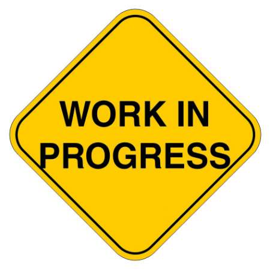

Overview of personal and organizational projects that I have been working on.
Overview of course work. Due to the University of Texas at Austin's honor policy, I won't be hosting course based code here directly. I have related course projects in private repos. Once I talk more with professor about hosting old code this may change but for now if you would like access to the mentioned files in this section, please contact me.

This website is one of my first forays into webdesign, HTML, Javascript, and CSS. My goal is develop a clean, centralized location to document and store my projects, experiences, and stories while learning about web design as a hobby. The site design was done primarily with Bootstrap classes. Please feel free to explore and let me know what you think!